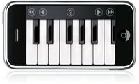

Piano
 De: La Frikipedia, la enciclopedia extremadamente seria.
De: La Frikipedia, la enciclopedia extremadamente seria.
| De la serie Instrumentos de tortura auditiva:
|
| Piano
|
| 
|
| No, ésto no es un piano.
|
|
| Color
|
Mayoritariamente, negro
|
| Estilo
|
Clásico, Jazz, Heavy Metal, Death Metal
|
| Época
|
Reto-Neo-ClasiRomanticismo/Barroco
|
| Músico asociado
|
Actor porno Pianador
|
| Nacionalidad
|
Italiano
|
| Malo o Bueno
|
Bueno, en teoría
|
| Canciones famosas
|
Frére Jacques
|
| Sonido
|
Clinc, clinc, clonc...
|
| Nitidez
|
Precisa, con ciertos toques juguetones
|
| Afinado en
|
El taller de un tio que cobra mucho
|
| Notas
|
Muchas tiene
|
Caja grande de cuerdas y teclas que al oprimir una tecla, golpea una cuerda y genera un ruido, al tocarse las teclas de determinada manera se puede producir algo llamado musica. Se usaba en la antiguedad para generar sonidos en orden armonico, actualmente la musica electronica y el requeson han sustituido al piano.
¿Para que sirve?
Basicamente, para tocar musica, pero como actualmente nadie lo usa para ello, se puede usar para muchas otras cosas:
- Para matar a alguien aplastado.
- Elemento de tortura.
- Se puede esconder una bomba adentro de ellos.
- Como mesa.
- Para que te subas ensima y seas mas alto.
- Buen lugar para Fornicar.
- Las teclas son comestibles.
- Puedes arrancar las cuerdas y hacerte una guitarra.
- Se puede usar para derrochar dinero.
- Las cuerdas tambien pueden matar gente.
- De adorno, despues de todo queda bien en cualquier lugar.
- De apollo para cosas.
- Para sacarle una hernia a alguien de intentar moverlo.
- Se puede vender y conseguir dinero.
- Si te hace frio se puede quemar para calentar.
¿Se puede usar para tocar musica?
Si se puede, pero realmente nadie lo hace.
¿Como se toca?
Realmente es fácil tocar el piano, si estás al puro pedo y tienes un piano (no un órgano; para esta situación visita organo) puedes seguir estas instrucciones para tocarlo:
- Te sientas frente al piano, se recomienda acercar la silla al piano y no el piano a la silla porque te saldra una hernia.
- Extiendes las manos y las colocas sobre el teclado.
- Extiendes los dedos y los colocas sobre las teclas.
- Tocas las teclas.
- Sentirás unos sonidos horribles, eso significa que estas tocando el piano.
Y asi se toca un piano, es realmente facil hacerlo, lo dificil es tocarlo bien, para ello se nesesitan de 10 a 20 años de academia.
Gente increiblemente talentosa en el piano
- Ludwig van Beethoven.
- Fiedericho Chopin
- Elton Jonh.
Freddy Mercury en su maximo explendor
- Freddy Mercury.
- Jaime Becerril Gómez
- El sujeto cara de culo.
- Dios.
- Tú.
- Tu mamá.
- Cualquiera
imbécil con un poco de talento.
- Profesor de piano (en peligro de extinción).
- El que mata a la novia de Parche en la pelicula Parche.
- Diox.
- Administrador cualquiera de la frikipedia.
- Steven Wonders (o como se escriba).
- Cualquiera con dos manos y todos los dedos.
- Los muertos.
¿Que se toca con el piano?
- El piano
- Música clásica
- Baladas
- Casi toda la música se puede tocar en el piano
- Música de: Mario Bros, Tetris, Zelda...
Vease tambien
Autor(es):
- Chidoman
- Margui lovegood
- James barisax
- Cibercrank
- Prototype
- Veni Vidi Vici
- Mel-o
- Alexlmagno
- 62666
- SillyWalk
Frikipedia 2005-2016, Licencia
GFDL 1.2 - Extraído por FrikiLeaks